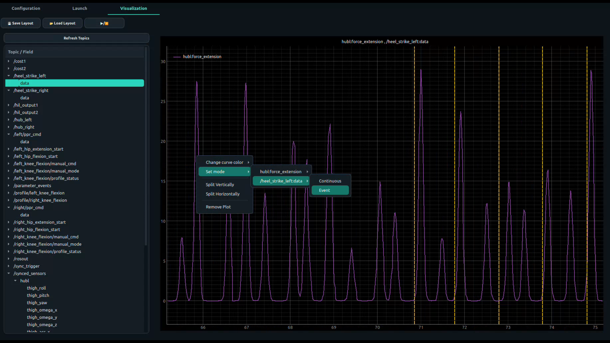

PASE GUI
PASE is the desktop application of ExoStack: it edits the configuration, starts every stage and plots any signal live.
Three tabs
PASE is a PyQt5 application for using the stack without editing files. Its Configuration tab edits the four YAML files, with algorithm lists filled from the plug-in folders. The Launch tab starts the micro-ROS agents and the six stages in order and shows the live ROS 2 graph, and the Visualization tab plots any topic field, with channels selected by name and gait events drawn as markers.
Configuration tab
Four linked YAML editors; lists come from the saved files and plug-in folders.
Open →Launch tab
Start and stop the agents and the six stages; see which nodes are alive.
Open →Visualization tab
The Visualization tab plots any field of any topic live, with a rolling 10-second window. The topic tree is on the left, the plot area on the right.
| To … | Do this |
|---|---|
| update the topic list | press 🔄 Refresh Topics (after starting new stages) |
| plot a signal | expand a topic in the tree and drag a field onto a plot (“Drop a topic field here”). Several fields can share one plot |
| plot a sensor by name | expand /synced_sensors: it is listed as hub → channel using sensors.yaml, so you never count array indices |
| add a plot | right-click an empty part of the plot area → Add Blank Plot |
| split the screen | right-click a plot → Split Vertically or Split Horizontally; repeat for a grid |
| remove a plot | right-click the plot → Remove Plot |
| show events as markers | right-click the plot → choose the curve → Event: every message is drawn as a dashed vertical line. Use it for gait-event topics such as /heel_strike_right |
| return to a line plot | right-click → curve → Continuous |
| change a curve colour | right-click the curve's legend label → choose a colour |
| freeze the display | ▶/⏸ pauses and resumes all plots (data keeps arriving) |
| save the arrangement | 💾 Save Layout → JSON file with plots, splits, curves, modes and colours |
| restore it | 📂 Load Layout → the same JSON file |
/synced_sensors → hubr → fsr with /heel_strike_right in Event mode on the same plot, to check detection timing; (2) /right/hip_ppr_cmd, the command sent to the valve; (3) /synced_sensors → hubr → force_extension, the force actually delivered. Save it once and load it at every session.